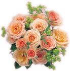

| Elévation de l'âme |
|
|
 Pour élever nos esprits et fournir l'inspiration dans nos vies quotidiennes, une impressionnante variété de livres de Maître Suprême Ching Hai a été traduite en plusieurs langues (voir ci dessous). Ces publications sont disponibles dans les centres locaux ou siège à Formose (P.O. 9, Hsihu, Miaoli, Formose). Une grande collection des conférences de Maître est aussi disponible sur cassette audio et vidéo, ainsi que des photos personnelles dans toutes les dimensions. Les revues de Maître Suprême Ching Hai qui constituent une autre source inestimable d'information et d'inspirations courantes sont disponibles dans plus de dix langues : en anglais, chinois, thaïlandais, français, allemand, espagnol, Coréen, portugais, indonésien, japonais et aulacien.
Prendre l'un des livres de Maître au milieu d'une journée bien chargée peut redonner la vie ! Ses paroles sont un rappel clair de notre vraie Nature. En lisant Ses conférences spirituelles instructives (la série de la Clé de l'illumination immédiate), la poésie profondément compatissante (les Larmes silencieuses), ou les fables aux messages (Histoires racontées par Maître), les perles de sagesses sont toujours révélées. Certains initiés utilisent même les livres comme les Aphorismes en les consultant avec une question, ouvrant une page, et appliquant les perspectives de Maître à la situation.
Le livret-échantillon gratuit "la clé de l'illumination immédiate ", a été traduit approximativement en 40 langues et a été grandement distribué. Il est actuellement disponible en anglais, chinois, aulacien , espagnol, portugais, français, allemand, hollandais, italien ,grec, polonais, hongrois, bulgare, roumain, croate, tchèque, slovaque, slovène, suédois, finlandais, norvégien, russe, ukrainien, arabe, hébreux, turc, zoulou, coréen, japonais, thaï, indonésien, mongol, hindi, népalais, bengali, birman, cambodgien, philippin et tibétain. Pour obtenir les livre, les cassettes audio, vidéo ou tout autre article, contacter votre centre local ou le correspondant. Le lieu d'exhibition pendant les retraites est un excellent endroit en première vue pour les livres de Maître, les cassettes, les photos, les tableaux et bijoux. De plus, beaucoup de revues fournissent des informations sur les récentes nouveautés en livres et cassettes. Toutes les publications sont offertes à des prix proches du prix de revient. Si nécessaire, vous pouvez commander directement au siège à Formose. Les catalogues détaillés sont aussi disponibles sur commandes.
|
|